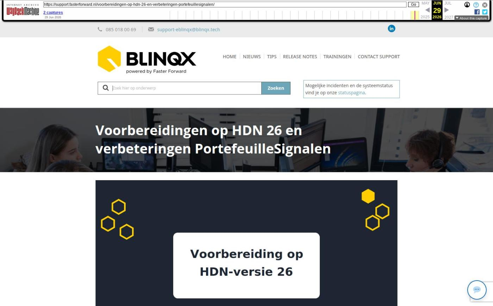

Voorbereidingen op HDN 26 en verbeteringen PortefeuilleSignalen

Tekstinhoud
Op woensdag 27 mei zijn Elements en eBlinqx weer verbeterd en uitgebreid met nieuwe features. Deze update bereidt Elements en eBlinqx voor op de aankomende HDN-versie 26. De overgang naar deze nieuwe HDN versie vindt plaats op 30 mei 2026.
Aanpassingen naar aanleiding van HDN-versie 26
Nieuwe functionaliteiten
Verbeteringen/ wijzigingen
Voor Elements/eBlinqx geen actie benodigd
Verbeteringen koppelingen met Portefeuillesignalen
Overige verbeterpunten
Aanpassingen naar aanleiding van HDN-versie 26
Nieuwe functionaliteiten
Betalingsmethode advieskosten vastleggen
De betalingsmethode van advieskosten wordt voortaan automatisch overgenomen uit het adviespakket. In het hypotheek product wordt deze informatie getoond onder het tabblad "Wonen" bij "Netto advieskosten". Je hebt twee opties:
Voldoen uit eigen middelen
Meefinancieren in de hypotheek
Deze informatie wordt automatisch meegestuurd in de hypotheekaanvraag naar de geldverstrekker.
Voorkeurstaal bij levensverzekeringen
Bij het aanvragen van levensverzekeringen via HDN kan een voorkeurstaal worden meegegeven. Als deze is ingevuld in de levensverzekeringsaanvraag en deze staat nog niet in Elements of eBlinqx dan wordt deze toegevoegd als voorkeurstaal. Hiermee wordt correspondentie zoveel mogelijk in de juiste taal gegenereerd, afhankelijk van de inrichting van de omgeving.
Uiterste aanleverdatum-velden voor renteaanbod en hypotheekaanbod toegevoegd
Er zijn nieuwe datumvelden beschikbaar voor het renteaanbod en hypotheekaanbod, namelijk uiterste aanleverdatum dossier renteaanbod en uiterste aanleverdatum dossier hypotheekaanbod. Deze worden via het HDN-bericht aangeleverd en in het dossier beschikbaar gesteld. Wil je deze gegevens gebruiken voor signalering of workflowacties, dan kan dit worden ingericht via de workflow. Stuur hiervoor een e-mail naar support-eblinqx@blinqx.tech.
Verbeteringen/ wijzigingen
Matching aanvraagbericht aan adviseur: de matching van het aanvraagbericht aan de adviseur in de HDN inbox is verbeterd
Maatschappij type lijst: de maatschappij type lijst van HDN is geactualiseerd met nieuwe aanbieders en verouderde maatschappijen zijn verwijderd
Landennamen: de naam voor Congo (landencode CD) is gewijzigd naar "Democratische Republiek Congo" voor betere herkenbaarheid
KX: we hebben de ondersteuning voor KX-berichten (kredietaanvragen) verwijderd uit het systeem. Hier wordt door HDN geen gebruik meer van gemaakt.
Documentbericht (DX): de maximale bestandsgrote van dit bericht is verhoogt van 30mb naar 35mb
Bankgarantie (WX): bij het versturen van de bankgarantie wordt gekeken of in Elements of eBlinqx de voorkeurstaal staat ingevuld. Staat deze op Engels dan wordt dit als voorkeurstaal meegestuurd. Is de voorkeurstaal niet ingevuld of staat deze op Nederlands dan komt Nederlands in het uitgaande bericht te staan. Onder het element 'Object' is soort bouw en bestaande en nieuwbouw toegevoegd
Zakelijk inkomen (ZX): Het e-mailadres en telefoonnummer zijn in het ZX bericht verplaatst naar het element PartijNAWData. Dit geldt ook voor het e-mailadres en telefoonnummer onder het kantoor of centrale organisatie die staat in het tussenpersoonselement. Staat in Beheer – Organisatie & Personen onder het kantoor of centrale organisatie het telefoonnummer (laatst opgevoerde met type zakelijk) of e-mailadres (laatst opgevoerde met type zakelijk) niet dan verschijnt er een foutmelding
Voor Elements/eBlinqx geen actie benodigd
Na de release is er geen actie benodigd binnen Elements/eBlinqx. Wij zorgen ervoor dat de aansluiting met HDN blijft werken. Hiervoor hoef je zelf niets te doen.
Verbeteringen koppelingen met Portefeuillesignalen
In de koppeling met PortefeuilleSignalen zijn er diverse verbeteringen doorgevoerd, waardoor er een betere data-uitwisseling is. De volgende verbeteringen zijn doorgevoerd:
Aan de SMART module is een selectie toegevoegd waarmee je direct naar het uitgebreide zoekscherm van PortefeuilleSignalen kunt gaan. In de SMART module is het woord Hypotheekbond vervangen door Signalen
Er is een verbetering doorgevoerd om te voorkomen dat inkomens dubbel in Portefeuillesignalen komen te staan. Bij het binnenkomen van de hypotheekaanvraag in Elements/eBlinqx wordt er nu beter gecontroleerd of het inkomen al aanwezig is. Dan wordt deze niet overgenomen vanuit het aanvraagbericht
De tabbladen Fastlane en Hypotheekbond zijn verduidelijkt. Het tabblad Fastlane heet nu Hypotheekadvies, het tabblad Hypotheekbond is aangepast naar Signalen
UwKluis vragenlijsten (JSON bestanden) zijn beschikbaar via de API
De mapping van de burgerlijke staat is uitgebreid en is nu verplicht om foutmeldingen te voorkomen
Overige verbeterpunten
Het tekenen voor gezien voor identiteitsdocumenten is verbeterd. Het systeem ondersteunt nu ook dossiers waarin alleen de voorkant van een identiteitsdocument beschikbaar is. Daarnaast blijft het uiteraard mogelijk om zowel voor- als achterkant aan te leveren. Hierdoor is er meer flexibiliteit in de verwerking van documenten binnen het dossier
Bij serviceprovider omgevingen wordt nu in het uitgaande IA bericht het SP element meegestuurd, zodat het duidelijk is dat deze vanuit een serviceprovider is verstuurd en het terugkomende IX bericht juist wordt ontvangen
Er wordt nu gekeken naar het standaard correspondentieadres van het dossier in plaats van het adres onder de persoon wanneer er een Finly formulier wordt verstuurd wat niet is gekoppeld aan een product. Is het formulier gekoppeld aan een product dan wordt er gekeken naar het standaard correspondentieadres in het product
Geplaatst op 26 mei 2026 (Laatste update: 15 juni 2026)
Laatste 5 releasenotes
Verbeteringen performance »
Voorbereidingen op HDN 26 en verbeteringen PortefeuilleSignalen »
Nog meer data en documenten vergelijken »
Gemakkelijk data en documenten vergelijken »
Verbeteringen boekhouding en facturatie »